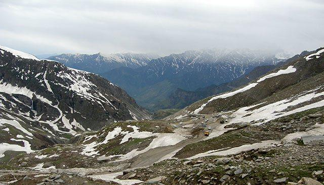
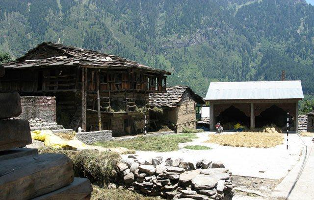
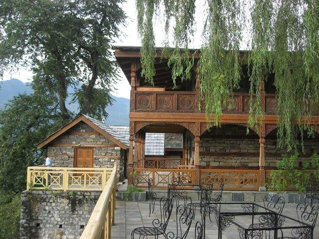
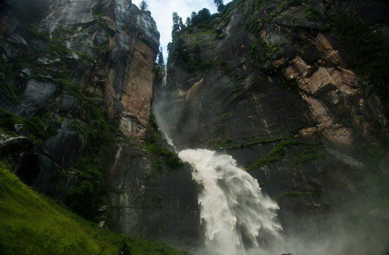
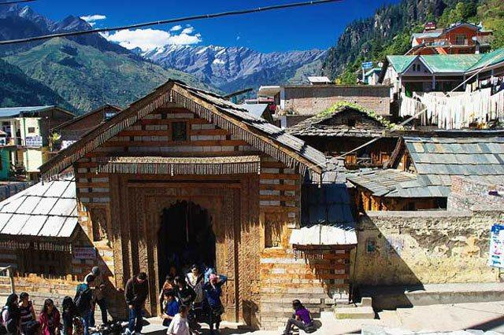
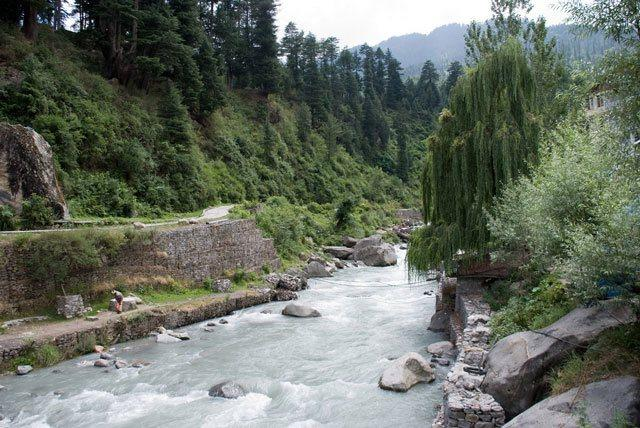
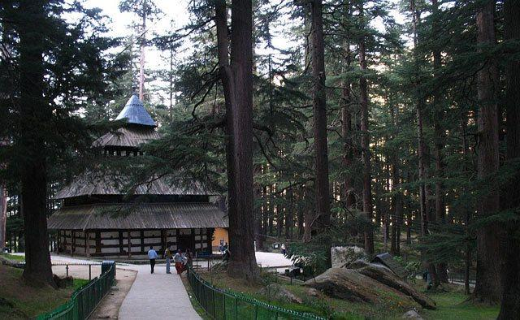

Tourist Places To Visit
Planning A Trip To Manali? Here's our list of 8 Top Tourist Places To Visit In Manali.
Snow capped mountains, meandering rivers, quaint hamlets and a tranquil pace of life - that’s the charm of the picturesque hill resort of Manali. Located about 270 km north of Shimla in Himachal Pradesh, Manali is one of India’s most popular tourist destinations. It is cradled by the spectacular Pir Panjal and Dhauladhar ranges, and the beautiful Beas river passes through it. To help you take your pick from the diverse and interesting sights, we have drawn up a list of top 8 tourist places to visit in Manali.
Rohtang Pass

Of all the places to visit in Manali, Rohtang Pass is perhaps the most popular. Located about 51 kms from Manali at a height of 3980 m on the highway to Leh, it serves as crucial trade route and a gateway to the valleys of Lahaul-Spiti and Leh. Open annually from June to October, it offers breathtaking panoramic views of the surrounding snowcapped mountains. Nearby are the Dassaur Lake and the Beas Kund. Also visible are the Sonapani glacier and the twin peaks of Geypan
Solang Valley
About 14 km northwest of Manali, between the village of Solang and Beas Kund, lies the pristine Solang Valley. It commands spectacular views of snow-capped peaks and glaciers. A perfect spot for summer and winter adventure sports, thrill seekers can take their pick from paragliding, zorbing, skating and skiing. During winters, it is a popular skiing resort where skiing equipment can be rented and training facilities availed. Skiing is replaced in summer months with zorbing, horse riding, para gliding.
Old Manali

On the far side of the Manalsu Nala, lies the quaint, idyllic retreat of Old Manali. With its rustic cottages, lush orchards, bubbling river, laidback way of life, it is a world apart from the hustle and bustle of new Manali. The Manu Maharishi Temple, dedicated to the ancient sage Manu (from whom Manali derives its name), is one of the prominent sights. Old Manali is a peaceful haven which still retains the unique traits of a mountain village; and it is this distinctive charm which makes it one of the most interesting places to visit in Manali.
Naggar

Located at about 20 km from Manali, the picturesque Naggar village was the capital of the Kullu kingdom in the 16th century. The Naggar Castle, a gorgeous stone-and-wood structure, has now been converted into a heritage hotel which offers magnificent views of the Kullu valley. Some notable attractions include the Jagati Patt temple, the Gauri Shankar temple, the Chatur Bhuj temple and the Roerich art gallery. The popular Naggar fair is held annually in April. Unparalleled natural beauty, fascinating cultural and architectural heritage, coupled with new-age attractions like adventure sports, Naggar is one of the most famous tourist places in Manali.
Jogini Falls

One of the most beautiful places to visit in Manali is the Jogini falls, a 2 km trek northwards from the Vashist village. The sight of the waters cascading from the towering mountains makes for an unforgettable experience. The trek follows a scenic route with amazing views of the surrounding mountains and pine forests. Tucked away in the lap of nature, it is a magical escape from the dust and din and into serenity.
Vashist Hot Water Springs

The small village of Vashist, situated about 3 km from Manali, on the banks of the river Beas, is famous for its natural hot sulphur springs. Modern bathhouses have been built where tourists can relax in the healing properties of the sulphurous waters. Hot water from the springs is directly channelled to the Turkish-style showers. The other notable attraction of Vashist is the pyramidal stone temple at the main village square, dedicated to the local patron saint, the ancient sage Vashist Muni.
Beas Kund

At a height of 4000m from sea level, the mighty Beas river originates from the Beas Kund lake in the Dhauladhar range. It is a sacred spot for Hindu pilgrims as legend has it that ancient sage Vyas took his daily Bath in this lake. The Beas Kund offers some of the most spectacular views of the nearby mountains. The Beas Kund trek, along the river and through the picturesque Solang valley, is perhaps the most popular short trek in the region, boasting of stunning views of the magnificent snow capped ranges.
Hadimba Temple

Dedicated to Hadimba, wife of Bhima in Mahabharata, this ancient temple is built in a pagoda style around a natural cave and encompassed by the beautiful cedar forest of Dhungri Van Vihar. The inner walls of the temple are adorned with intricate wood carvings depicting mythological characters, cosmic dancers and animal motifs. As Hadimba was the patron goddess of the Kullu royal family, this temple draws a huge number of devotees and tourists alike. Every year in May, a three-day fair is held to celebrate the birthday of the goddess which sees the congregation of devotees from far and wide.